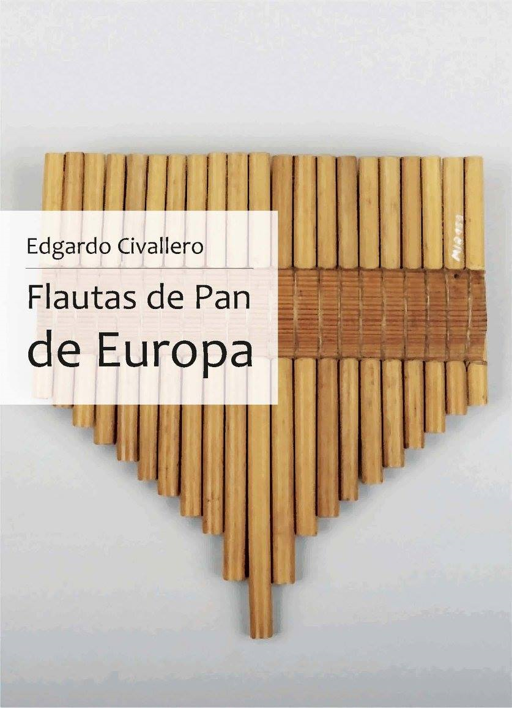

Flautas de Pan de Europa
Inicio > Libros digitales sobre música > Flautas de Pan de Europa
Cómo citar este trabajo: Civallero, Edgardo (2025). Flautas de Pan de Europa. Edición de archivo. Bogotá: El Zorro de Abajo Editora.
Descargar en PDF.
Este texto constituye una síntesis detallada y rigurosa sobre las flautas de Pan del continente europeo. A través de un recorrido que se extiende desde el Paleolítico hasta la actualidad, se reconstruye la genealogía material, sonora y simbólica de la flauta de Pan, un instrumento que encarna el diálogo entre el aliento humano, la materia vegetal y la imaginación ritual. Basado en evidencias arqueológicas, fuentes iconográficas, textos literarios y paralelos etnográficos, el estudio analiza tanto la evolución técnica como la dimensión espiritual del instrumento en las distintas culturas europeas.
En la introducción se establecen las bases físicas del instrumento: una serie de tubos de longitud variable, cerrados en uno de sus extremos y soplados transversalmente por el otro. El principio acústico —la relación entre la longitud y la frecuencia— se ha mantenido constante a lo largo de milenios, aunque los materiales, formas y afinaciones hayan cambiado. Las flautas de Pan europeas son, en este sentido, herederas directas de una intuición arcaica del sonido: la de hacer cantar al viento atrapado en la caña.
El primer bloque aborda el mundo prehistórico, donde se sitúan los antecedentes más remotos de estos tubos múltiples. En el Paleolítico superior aparecen instrumentos de hueso y marfil, en ocasiones agrupados, que prefiguran la syrinx clásica. Los hallazgos de Hohle Fels y Geissenklösterle, junto con los fragmentos del sur de Francia y los Cárpatos, sugieren que la agrupación de tubos era ya una práctica musical establecida. Durante el Neolítico y la Edad del Bronce, los pueblos de la cuenca del Danubio, los Balcanes y el Egeo desarrollaron flautas de hueso, caña y cerámica con perforaciones múltiples, utilizadas en contextos agrícolas y funerarios. Estas piezas, interpretadas a menudo como ofrendas, muestran una relación estrecha entre sonido, fertilidad y trascendencia.
En la sección dedicada a Grecia, el texto despliega un análisis exhaustivo del mito de Syrinx y Pan. Se estudian las variantes literarias del relato (Ovidio, Longo, Pausanias) y sus derivaciones musicales, mostrando cómo el mito justifica tanto el origen vegetal del instrumento como su carga erótica y metamórfica. La flauta de Pan se convierte en símbolo de deseo, naturaleza y trance. Se examina su construcción: tubos de caña unidos con cera o lino, dispuestos en línea o en abanico, afinados por proporciones pitagóricas simples. Los ejemplares representados en cerámica ática, relieves y esculturas revelan configuraciones de 6 a 9 tubos, y su ejecución aparece ligada al ámbito pastoril, aunque también a ceremonias dionisíacas.
El apartado romano amplía este universo sonoro. La fistula Panis, heredera directa de la syrinx, se documenta tanto en ambientes rurales como urbanos. El texto revisa los mosaicos de Pompeya, los relieves funerarios de Ostia y algunas miniaturas, donde se aprecia la diversidad morfológica del instrumento: flautas de caña, hueso o metal, con hasta 15 tubos y escalas diatónicas o cromáticas. En la Roma tardorrepublicana y en el Imperio, la flauta de Pan fue también un emblema iconográfico del dios Fauno y de las fiestas campesinas, integrándose en el repertorio de los tibicines y músicos itinerantes. Algunos ejemplares de bronce hallados en Croacia y Hungría muestran un notable refinamiento técnico, con uniones metálicas y sistemas de afinación mediante cera móvil.
A partir de este punto, el análisis se amplía hacia la tardoantigüedad y el cristianismo primitivo, periodo en el cual la flauta de Pan comienza a desaparecer del ámbito ritual oficial, asociada por los Padres de la Iglesia a la sensualidad pagana y a los cultos orgiásticos. Sin embargo, el texto muestra que el instrumento no desaparece: sobrevive en los márgenes, en la música rural, y en contextos pastoriles de las regiones alpinas, balcánicas y celtas. Los testimonios visuales de manuscritos iluminados y capiteles medievales conservan su figura junto a la de sátiros y demonios, reconfigurada bajo el signo de la tentación o del diablo, pero aún reconocible como símbolo del soplo vital.
El capítulo dedicado al Medievo europeo revela cómo la flauta de Pan resiste en las culturas campesinas. En los Alpes, Córcega, Galicia, los Cárpatos y el área danubiana se documentan conjuntos de tubos de caña o madera empleados por pastores. En los tratados árabes y latinos sobre música (como los de Al-Fārābī y Hucbald) se describen "flautas pastoriles" semejantes a la syrinx, y en los textos trovadorescos y monásticos el instrumento aparece ligado a la figura del pastor como guardián del rebaño. Se describe también su rol en procesiones y danzas aldeanas.
En el Renacimiento, la flauta de Pan experimenta una recuperación erudita. Los humanistas y artistas, inspirados por la relectura de los mitos clásicos, reintroducen a Pan, las ninfas y los sátiros en la iconografía europea. Pintores como Piero di Cosimo y escultores florentinos representan nuevamente la syrinx como una suerte de emblema de armonía natural. Se documenta su aparición en talleres de instrumentos del siglo XVI, en los que se fabrican "pífanos de cañas" y "flautas de Pan napolitanas", así como en manuales de música que registran su tesitura y su afinación relativa a los recorders y las chirimías. El texto destaca su papel en el teatro pastoral y en los ballets cortesanos, donde reaparece como símbolo bucólico y erótico a la vez.
Durante la Edad Moderna y el siglo XIX, la flauta de Pan se relega nuevamente al ámbito rural, pero conserva vitalidad en regiones aisladas. Y para el siglo XX se mencionan las frestèu provenzales, la nai rumana y moldava, las firlinfeu del norte de Italia, las rebro y svyrili de Ucrania, las kuvytzi de Rusia, las skudučiai de Lituania, las kuim(a) chipsam del sur y suroeste de la República de Komi, las pölyannez y pölyanyas del distrito autónomo de los Komis de Perm, las kuvikly o dudki de Briansk, las vikushki de Kaluga, las kugikly o kuvichki de Kursk, la trstenke de Eslovenia, la trstenice u orglice de Croacia, las multanki y skuducze de Polonia, y las pánsip de Hungría.
En síntesis, el libro es una arqueología del sonido y de la materia y una etnografía de la respiración. Con este texto se ofrece no sólo una catalogación organológica, sino una historia del vínculo entre humanidad y soplo, naturaleza y memoria sonora.